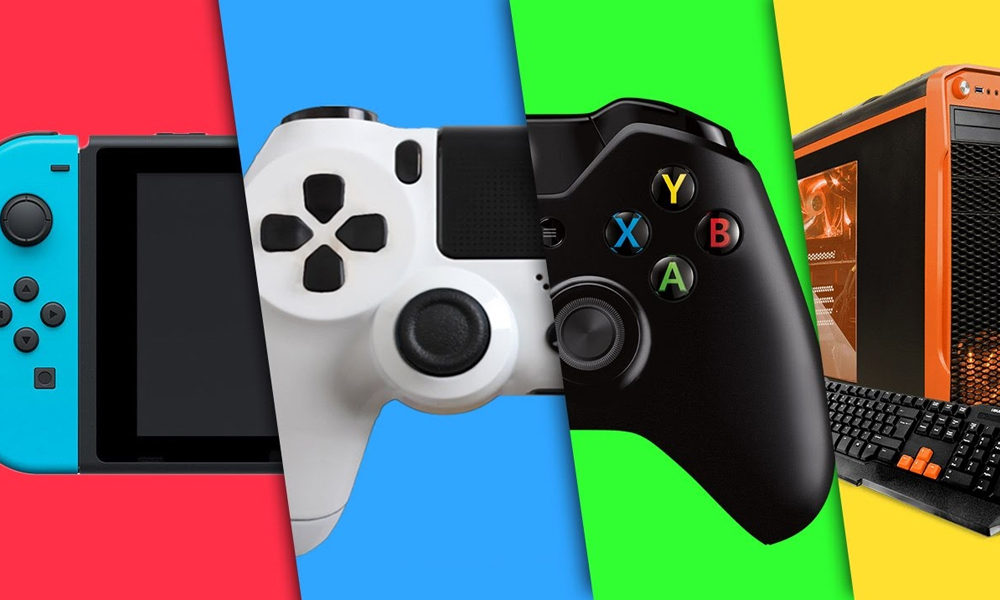
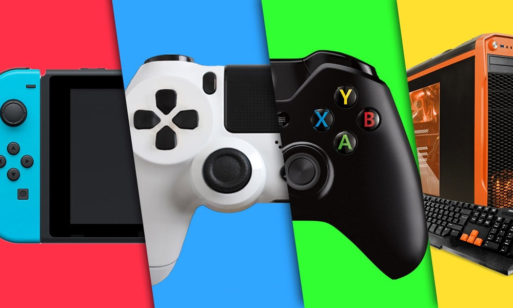

Mais sobre o mundo dos jogos digitais
 



O jogo eletrônico, videojogo ou videogame é aquele que usa a tecnologia de computador. Ele pode ser jogado em computadores pessoais (dentre eles tablets e telefones celulares), em máquinas de fliperama ou em consoles. Um console é um computador pequeno que serve basicamente para jogar videogame — PlayStation, Xbox e Wii são exemplos. Os consoles são conectados a controles manuais e a um aparelho de televisão. As pessoas podem jogar tanto sozinhas quanto acompanhadas.
Em constante evolução, o videogame é uma das formas de entretenimento mais populares do mundo. Além de proporcionar diversão, a teconologia dos jogos eletrônicos vem sendo cada vez mais explorada para fins educacionais.
Para que um jogo eletrônico comece, o computador precisa receber instruções. Esse conjunto de instruções é chamado de software. Um profissional chamado programador é responsável por escrever as instruções que fazem o jogo rodar. Quando o jogo é aberto, o software é carregado no hardware, ou seja, no computador ou no console.
No início, os jogos eletrônicos eram bastante simples, com gráficos básicos e sem som. William A. Higinbotham criou um dos primeiros videogames, Tennis for Two (“tênis para dois”), em 1958.
O primeiro jogo de fliperama chamou-se Computer Space e foi lançado em 1971. Logo outros jogos de sucesso surgiram, como Pong, Invasores do espaço e Pac-Man. O primeiro console caseiro também surgiu nessa época.
Em 1977, a empresa Atari lançou um console com cartuchos removíveis. Cada cartucho fazia rodar um jogo diferente. Com esse sistema, os jogos eletrônicos ganharam popularidade, mas as pessoas ainda queriam imagens e sons melhores.
Percebendo o grande interesse do público, muitas outras empresas começaram a desenvolver jogos eletrônicos. Elas melhoraram não só a qualidade do som e das imagens, mas também a tecnologia usada para rodar os games.
A internet eliminou a necessidade de os jogadores estarem no mesmo espaço físico. Hoje em dia, é possível jogar com pessoas localizadas em qualquer parte do mundo. Uma modalidade de videogame que vem se popularizando no início do século XXI são os jogos de realidade virtual. Neles, óculos especiais criam simulações em 3D, dando ao jogador a sensação de estar em uma situação real.
Evidentemente, o mercado de trabalho de programadores de jogos digitais está extremamente aquecido. Pois o número de usuários vem sofrendo um aumento constante. Logo, se você tem o desejo de trablhar com jogos, não será preciso se preocupar com falta de opportunidade, á que a demanada por profissionais qualificados nessa área é altíssima
O profissional formado em Tecnologia em Jogos Digitais trabalha diretamente na produção dos games. Ele pode ser responsável apenas por partes específicas do desenvolvimento ou pode gerenciar todo o projeto.
O mercado mais conhecido para esse profissional é o de entretenimento, mas após cursar uma boa faculdade de Jogos Digitais, ele consegue ingressar também em outros setores. Entre eles está o mercado de jogos educativos, cada vez mais usados dentro das escolas.